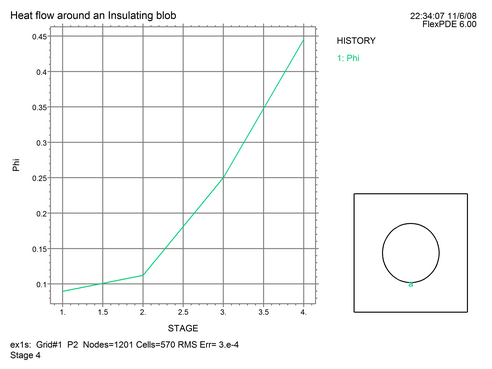

|
Parameter Studies Using STAGES |

  
|
|
Parameter Studies Using STAGES |
|
FlexPDE supports a facility for performing parameter studies within a single invocation. This facility is referred to as "staging". Using staging, a problem can be solved repeatedly, with a range of values for a single parameter or a group of parameters.
The fundamental form for invoking a staged run is to define one or more parameters as STAGED:
DEFINITIONS
Name = STAGED(value1, value2, ….)
The problem will be re-run as many times as there are values in the value list, with "Name" taking on consecutive values from the list in successive runs.
If the STAGED parameter does not affect the domain dimensions, then each successive run will use the result and mesh from the previous run as a starting condition.
Note: This technique can also be used to approach the solution of a strongly nonlinear problem, by starting with a linear system and gradually increasing the weight on a nonlinear component.
If the STAGED parameter is used as a dimension in the domain definition, then each successive run will be restarted from the domain definition, and there will be no carry-over of solutions from one run to the next.
As for time-dependent problems (which we will discuss later), variation of arbitrary quantities across the stages of a problem can be displayed by HISTORY plots. In staged runs the history is plotted against stage number.
As an example, let us run our sample heat flow problem for a range of conductivities and plot a history of the top edge temperature.
We will modify the definition of K in the insulator as follows:
DEFINITIONS
Kins = STAGED(0.01, 0.1, 1, 10)
{ Notice that the STAGED specification must appear at the initial declaration of a name. It cannot be used in a regional redefinition. }
…
REGION 2 'blob' { the embedded blob }
K = Kins
START(R,0) ARC(CENTER=0,0) ANGLE=360
…
HISTORY(Phi) AT (0,-R)
When this modified descriptor is run, the history plot produces the following:

In a staged run, all PLOTS and MONITORS requested will be presented for each stage of the run.
Other Staging Controls
| • | The global selector STAGES can be used to control the number of stages to run. If this selector appears, it overrides any STAGED lists in the DEFINITIONS section (lists shorter than STAGES will report an error). It also defines the global name STAGE, which can be used subsequently in arithmetic expressions. See the Problem Descriptor Reference for details. |
| • | The default action is to proceed at once from one stage to the next, but you can cause FlexPDE to pause while you examine the plots by placing the command AUTOSTAGE=OFF in the SELECT section of the script. |
Note: The STAGE facility can only be used on steady-state problems. It cannot be used with time dependent problems.